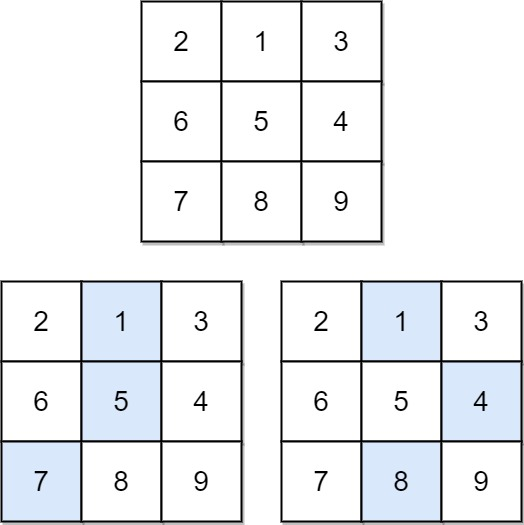
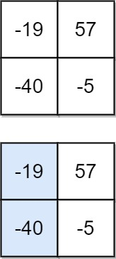

931. 下降路径最小和
从上往下逐行递推：每格加上上一行「正上、左上、右上」三格里的最小值，最后一行的最小值就是答案。
思路
dp[i][j]= 落到(i, j)的最小路径和；转移dp[i][j] = matrix[i][j] + min(dp[i-1][j-1], dp[i-1][j], dp[i-1][j+1])。- 第一行就是起点，
dp初值即原值；边界列少一个来源，用条件判断跳过越界。 - 可以原地改写
matrix省掉 dp 数组：走到第i行时上一行已经算完，不会再被用到。 - 值可为负，答案取最后一行的最小值，别初始化成 0。
图解
最优解
1class Solution {2 public int minFallingPathSum(int[][] matrix) {3 int n = matrix.length;4 // 原地递推：处理到第 i 行时，matrix[i][j] 已变成「落到这一格的最小路径和」5 for (int i = 1; i < n; i++) {6 for (int j = 0; j < n; j++) {7 // 上一行只有三个来源：正上、左上、右上8 int best = matrix[i - 1][j];9 if (j > 0) best = Math.min(best, matrix[i - 1][j - 1]);10 if (j < n - 1) best = Math.min(best, matrix[i - 1][j + 1]);11 matrix[i][j] += best;12 }13 }14 // 终点在最后一行的任意一格，取最小15 int ans = Integer.MAX_VALUE;16 for (int v : matrix[n - 1]) ans = Math.min(ans, v);17 return ans;18 }19}题目
给你一个 n x n 的 方形 整数数组 matrix ，请你找出并返回通过 matrix 的下降路径 的最小和 。
下降路径 可以从第一行中的任何元素开始，并从每一行中选择一个元素。在下一行选择的元素和当前行所选元素最多相隔一列（即位于正下方或者沿对角线向左或者向右的第一个元素）。具体来说，位置 (row, col) 的下一个元素应当是 (row + 1, col - 1)、(row + 1, col) 或者 (row + 1, col + 1) 。
示例 1：

输入：matrix = [[2,1,3],[6,5,4],[7,8,9]] 输出：13 解释：如图所示，为和最小的两条下降路径
示例 2：

输入：matrix = [[-19,57],[-40,-5]] 输出：-59 解释：如图所示，为和最小的下降路径
提示：
n == matrix.length == matrix[i].length1 <= n <= 100-100 <= matrix[i][j] <= 100
题面取自力扣当前版本。
数据快照 2026-11-04。题面版权归力扣所有，本站点仅供本人学习使用，请勿对外发布。